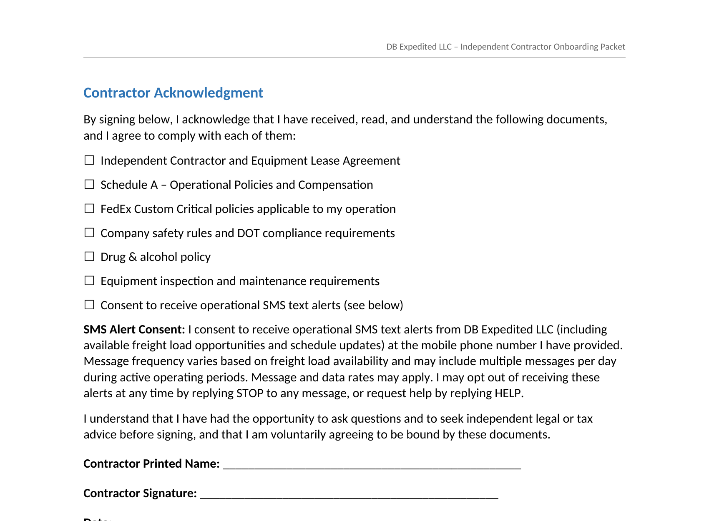

The excerpt below is a real page from our onboarding packet template (the signature/date lines are blank here because this is the unsigned template each new contractor receives and completes — individual signed copies contain personal information and are not published). It shows the SMS consent checkbox and language exactly as presented to the contractor, directly above the signature line that completes enrollment.

For reference, the SMS consent clause in full:
"I consent to receive operational SMS text alerts from DBExpedited LLC (including available freight load opportunities and schedule updates) at the mobile phone number I have provided. Message frequency varies based on freight load availability and may include multiple messages per day during active operating periods. Message and data rates may apply. I may opt out of receiving these alerts at any time by replying STOP to any message, or request help by replying HELP."
Only contractors who check this box and sign are enrolled. No phone number is ever added to the alert system without this completed and signed acknowledgment. See our Privacy Policy and Terms of Service for further detail on how this SMS alert system operates.